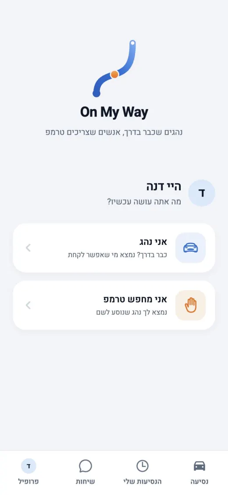
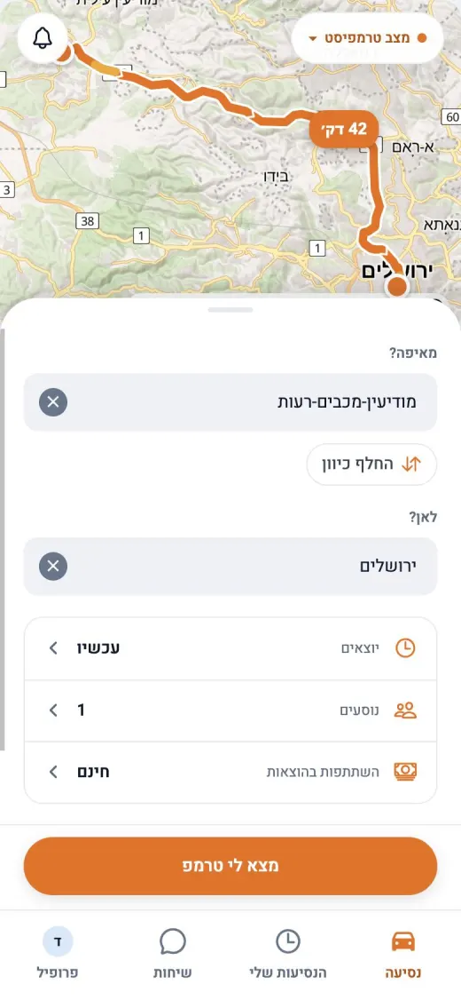
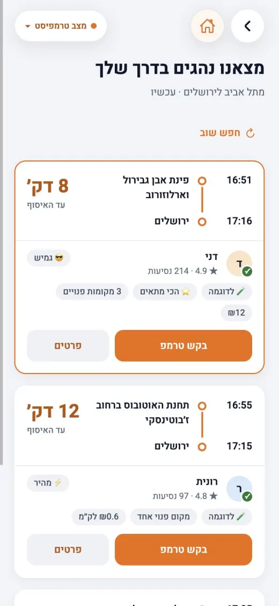
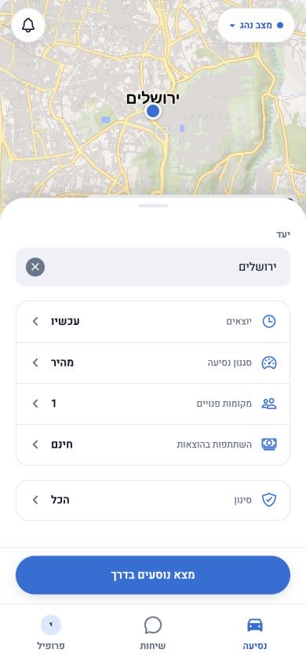
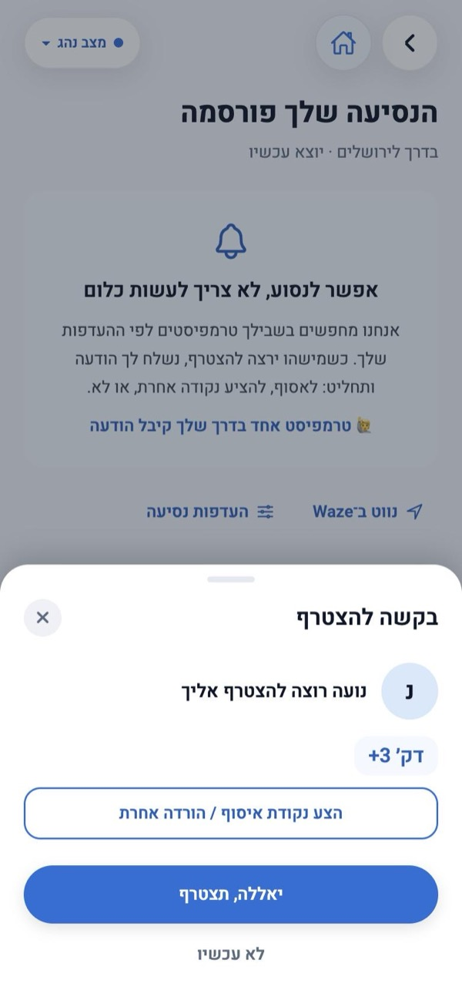
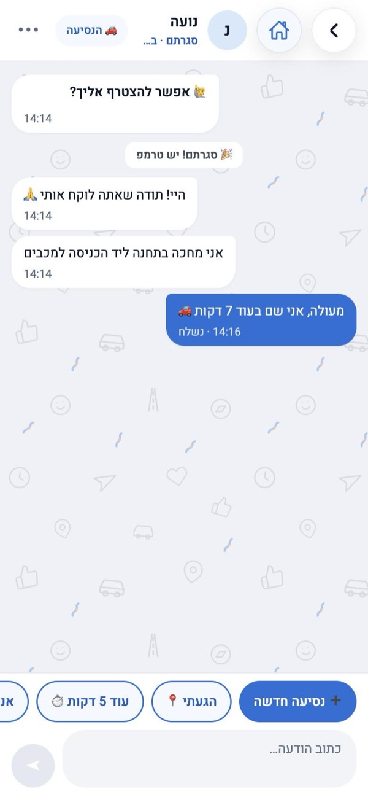
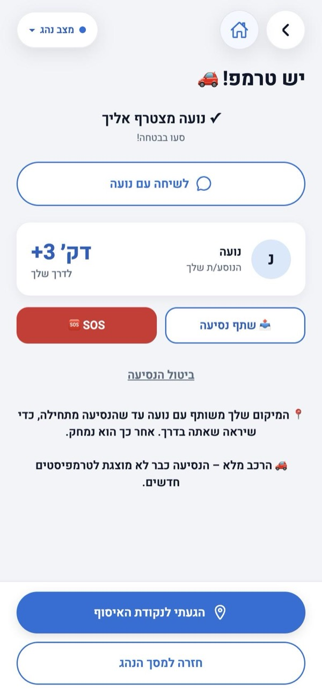

אפליקציית טרמפים · חינם
טרמפים, בלי לחכות בצומת.
נהגים כותבים לאן הם נוסעים. מי שצריך טרמפ כותב מאיפה ולאן. On My Way מחברת ביניהם.
נמאס לחכות שעות לאוטובוס, או לטרמפ שלא עוצר? תראו מראש מי נוסע לכיוון שלכם, ומתי.
יש לכם מקום פנוי ברכב? אתם נוסעים בכל מקרה. תראו מי מחכה בדרך וכמה דקות זה מוסיף לכם, ותחליטו.
חינם · בלי חנות אפליקציות · נפתח ישר בדפדפן
איך זה עובד
כותבים לאן
נהג: לאן הוא נוסע ומתי. מי שצריך טרמפ: מאיפה, לאן ומתי.
האפליקציה מחברת
מי שצריך טרמפ רואה נהגים שנוסעים בדיוק בכיוון שלו, ומתי הם עוברים.
מבקשים ומאשרים
שולחים בקשה להצטרף. שום דבר לא נסגר בלי שהצד השני מאשר. אחרי האישור מתכתבים בצ׳אט.
נפגשים ונוסעים
בנקודה שסיכמתם. הנהג מקליד את הקוד האישי של הנוסע, ויוצאים לדרך.
מה אחרים רואים עליכם?
✅ מה רואים
- את השם שבחרת (מספיק שם פרטי) ותמונה, אם הוספת
- דירוג ומספר נסיעות
- מאיפה ולאן אתם צריכים טרמפ, כדי שנהגים בדרך יראו
🔒 מה לא רואים
- מספר טלפון ומייל
- תאריך לידה וגיל
- מיקום חי. אותו שולחים רק אם רוצים, בצ׳אט
אתם מחליטים מי רואה את הבקשה: כל מי שבדרך, רק החברים שלכם, או גם חברים של חברים. ואפשר לדרוש דירוג מינימלי.
ככה זה נראה באפליקציה






מחפשים טרמפ, רואים מי עובר, מבקשים להצטרף, ומתאמים בצ׳אט.
20 דקות ברכב. לפעמים שעה וחצי באוטובוס.
- מחכים בתחנה בשמש ובגשם.
- מצביעים לרכבים שלא עוצרים.
- ומי שכבר עוצר? לא יודעים מי זה ולאן הוא נוסע.
יודעים מראש.
רואים מי נוסע לכיוון שלכם ומתי, וקובעים נקודת מפגש לפני שיוצאים.
🚗 לנהגרואה את מי הוא אוסף, וכמה דקות זה מוסיף לו.
🙋 לנוסערואה מי אוסף אותו, עוד לפני שהוא מגיע.
מה כבר יש בשביל הבטיחות
- קוד איסוף אישי: הנסיעה מתחילה רק כשהנהג מקליד את הקוד שלך.
- דירוגים וביקורות ממי שכבר נסע איתם.
- שיתוף הנסיעה, מיקום בצ׳אט וכפתור SOS.
- דיווח וחסימה בלחיצה אחת.
- רק מגיל 18 ומעלה.

עוד אין אימות של תעודת זהות. נוסיף אותו בהמשך.
רוצים להיות הראשונים שמנסים?
פתח את האפליקציה · חינםחינם · בלי חנות אפליקציות · נפתח ישר בדפדפן
שלחו לחבר בוואטסאפשאלות נפוצות
כמה זה עולה?
האפליקציה חינם. הנהג מחליט מראש אם הנסיעה חינם או שהוא מבקש השתתפות בהוצאות, ורואים את זה לפני שמבקשים. לפי החוק אפשר לבקש עד 2 ₪ לק״מ. הכסף, אם יש, עובר ביניכם ולא דרך האפליקציה.
מי רואה את הפרטים שלי?
רואים את השם שבחרתם, תמונה אם הוספתם, דירוג, ומאיפה ולאן אתם צריכים טרמפ. מספר טלפון, מייל ותאריך לידה לא מוצגים לאף אחד. ואתם בוחרים מי רואה את הבקשה: כל מי שבדרך, רק חברים, או גם חברים של חברים.
איך אני יודע/ת עם מי אני נוסע/ת?
לפני שמאשרים רואים שם, תמונה, דירוג וביקורות של מי שכבר נסע איתו. הנסיעה מתחילה רק כשהנהג מקליד את הקוד האישי של הנוסע, ובזמן הנסיעה אפשר לשתף אותה ויש כפתור SOS. עוד אין אימות של תעודת זהות, ונוסיף אותו בהמשך.
ומה אם אני לא יכול/ה להגיע?
לפני האיסוף האפליקציה שואלת את שני הצדדים "עדיין מגיע/ה?", ואפשר לבטל בלחיצה. הצד השני מקבל הודעה מיד, והבקשה חוזרת להיות פתוחה.
הנהג צריך לסטות מהדרך?
הנהג רואה בדיוק כמה דקות זה מוסיף לו, ומחליט. לפעמים האפליקציה מציעה נקודת מפגש קרובה, בטרמפיאדה או בתחנה, כדי שהנהג לא יצטרך לסטות בכלל.
צריך להוריד מחנות אפליקציות?
לא. On My Way נפתחת ישר בדפדפן, באנדרואיד ובאייפון, ואפשר להוסיף אותה למסך הבית כמו כל אפליקציה.
מאיזה גיל אפשר?
מגיל 18 ומעלה, גם לנהגים וגם לנוסעים.
למה עוד אין נהגים באזור שלי?
האפליקציה חדשה. נהגים ונוסעים צריכים להיות באותו אזור, ולכן כל חבר שמצטרף מקרב טרמפ. אפשר לשלוח את הקישור בוואטסאפ.